How to Play
4 Dimensional tic tac toe is much like regular old 2D tic tac toe,
but with a few more directions to make 3 in a row.
In 1 dimensional tic tac toe, you can only make 3 in a row in one
direction, as shown. (In one dimension, tic tac toe isn't a particularly interesting game to play)
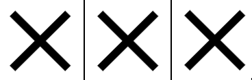
As we know, in 2 dimensional tic tac toe, you can make three in a row either across:
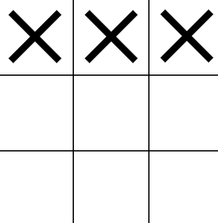
Or down:
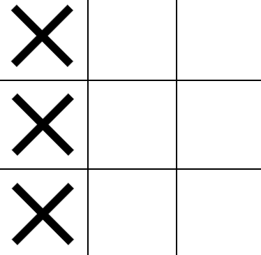
Or across and down at the same time, i.e diagonally in 2 dimensions:
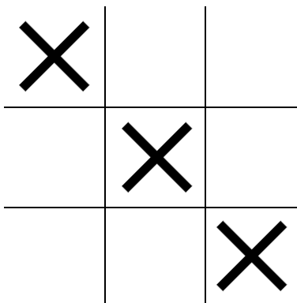
Playing 3D tic tac toe is the exact same as this, only there is another dimension we can get 3 in a row in
If 1D tic tac toe is a [3] board, and 2D tic tac toe is a [3x3] board,
then 3D tic tac toe should probably be a [3x3x3] board, like so:
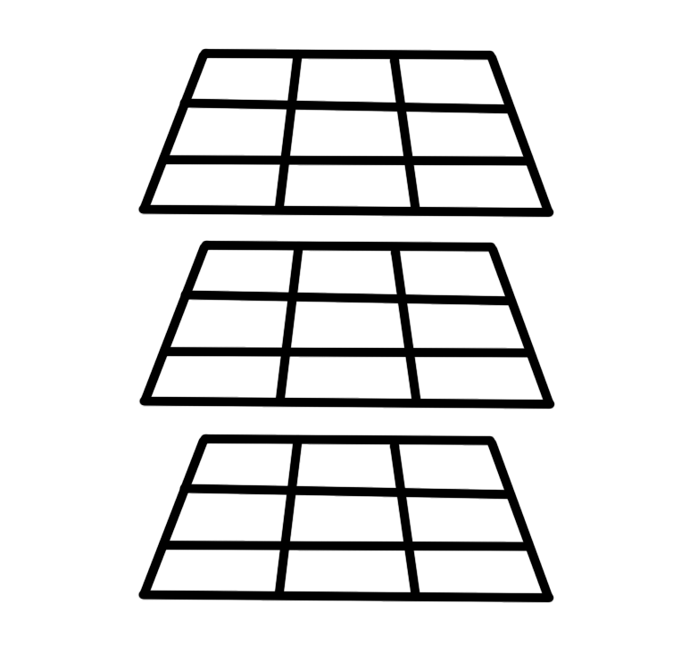
You may notice that this looks very much like a stack of 3 two dimensional boards on top of each other.
This makes sense, as a 2 dimensional board is a stack of three one dimensional boards!
Thus, we can represent this 3D board on a two dimensional screen for ease, like so:
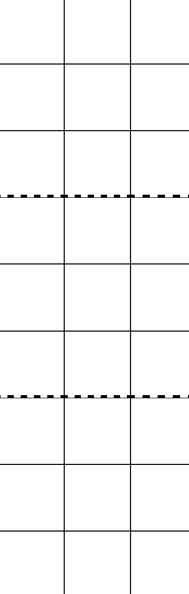
(The dotted lines represent the boundary between dimensions in the z axis, in the same way the thin
lines represent the cross over between dimensions in the x and y axes)
In this 3D board, there are lots of ways to make three in a row. We can do a boring old two-dimensional
three-in a row, i.e three in a row across the x and y axes, and not moving along the z axis. I have already
shown these above on the two dimensional boards. A more interesting strategy, perhaps is to make three in a
row along the z axis, while not moving along the x or y axes (shown below on left), or to move along both the z
and y axes at the same time (middle), or to move along all three at the same time (shown on right), which is
a diagonal line in 3 dimensions.

You may notice a pattern here, which is what I am trying to get at. Once we understand the basics behind how
one, two and three dimensional tic tac toe work, you can generalise for any number of dimensions
If a two dimensional board is three 1D "strips" of length three stacked on each other, and a 3D board is 3 of these 3x3
grids stacked on each other to make a cube, then a 4D board must be 3 of these 3x3x3 cubes stacked on top of each other along the
4th dimension to make a 3x3x3x3 tesseract.
That sounded pretty crazy to me, but i was intrigued which is why I made this game instead of something else, like
a wordle clone (which is what I was planning on). It turns out that we cant actually visualise this 4-cube or "tesseract", so there is no point in trying. Much like a 2D being that
can only see a slice of a cube at a time (as in squares), we can only view a 4D object in slices. Thus if we saw a 4D cube in front of us, it would look like nothing but a
regular old cube. If it had a colour gradient along the 4th dimension from red to green, and it moved along the 4th dimension, we would perceive a solid red cube slowly
transition into a solid green cube. There is a fun game out there for iOs called "4D toys" that explains this concept really well. Definitley worth the £5.
Anyways, if we extend our logic from above and represent a 4D board as three stacked 3D boards, we can represent it on a 2D screen as below:
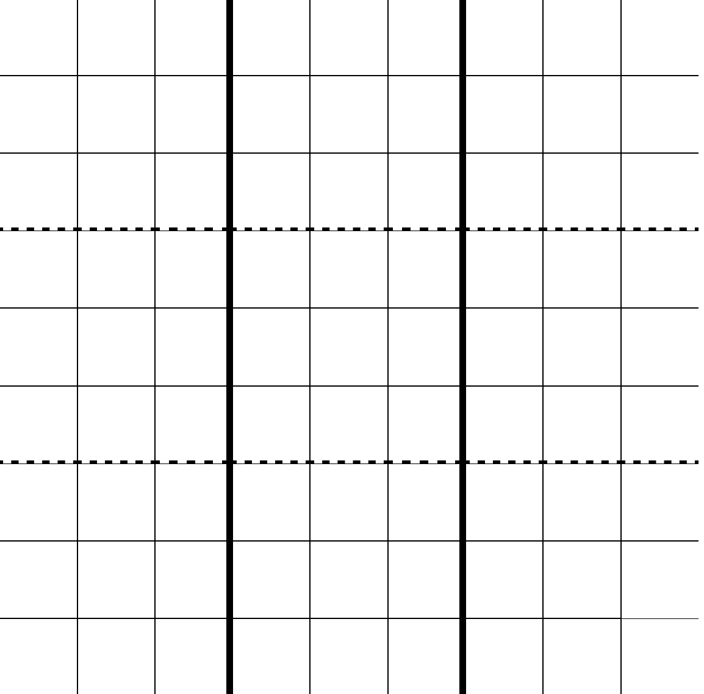
Keep in mind this is three cubes stacked along the 4th dimension. Each 3x3 "square" you see is a 2D slice, and each vertical strip of 3 3x3 "squares" is a cube.
The dotted lines represent the boundary between one step along the z axis (3d dimension), and the thick solid lines represent the boundary between
one step along the w axis (the 4th dimensional axis).
In this new board there are loads of directions we can create a line in, for example, along the 4th dimension only (across the z axis only):
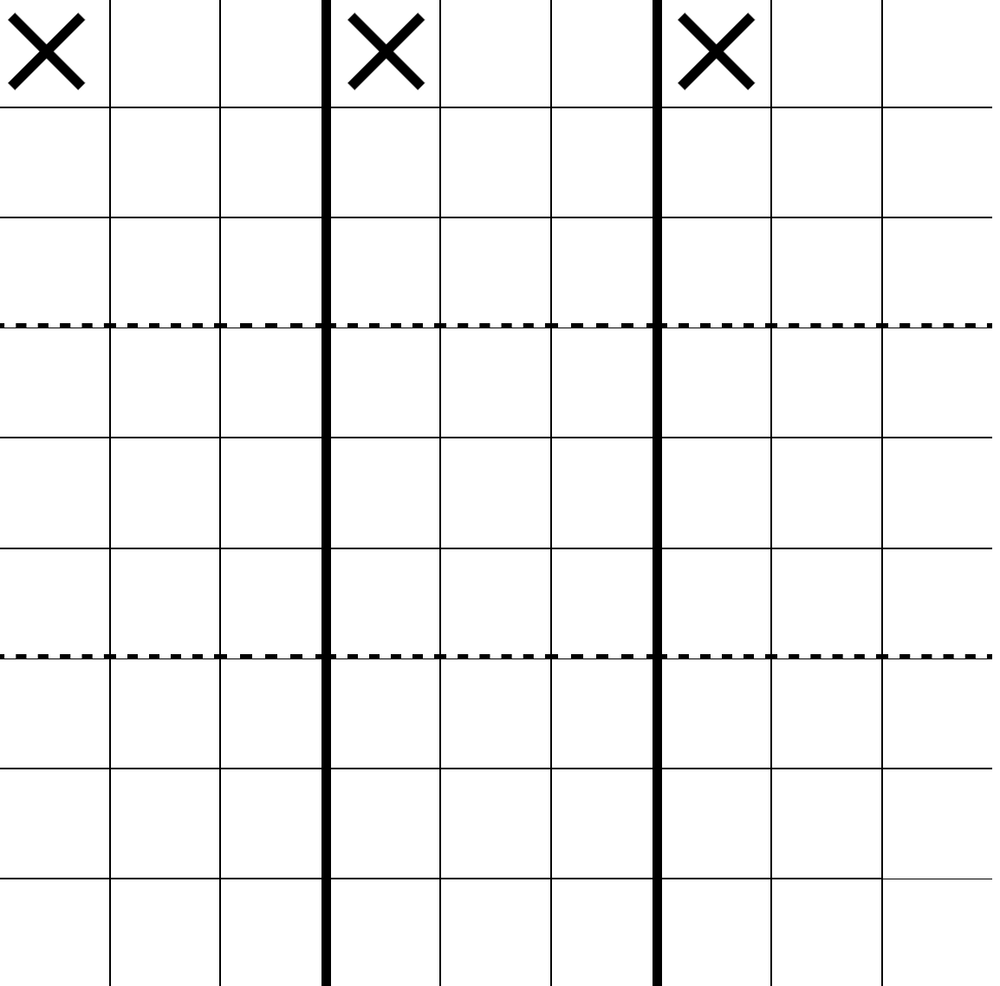
Across the x and w axes:
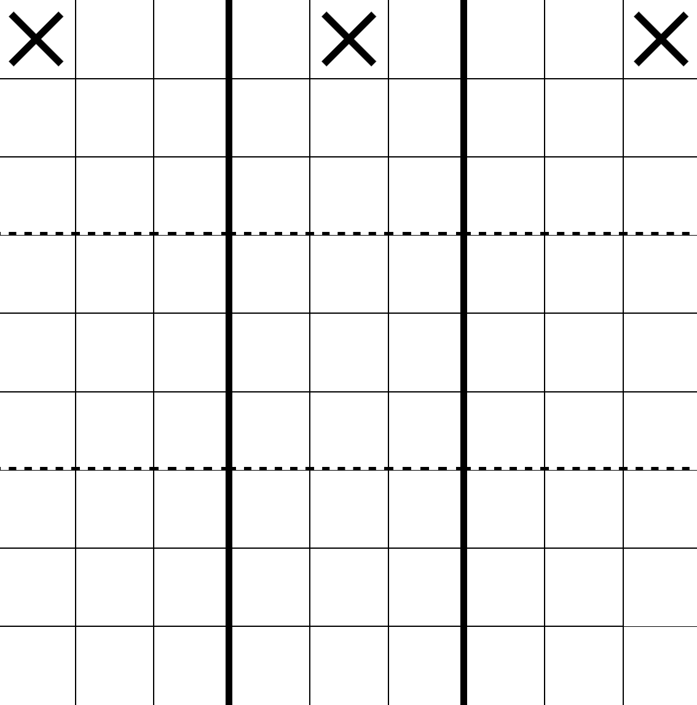
Across the x, z and w axes:
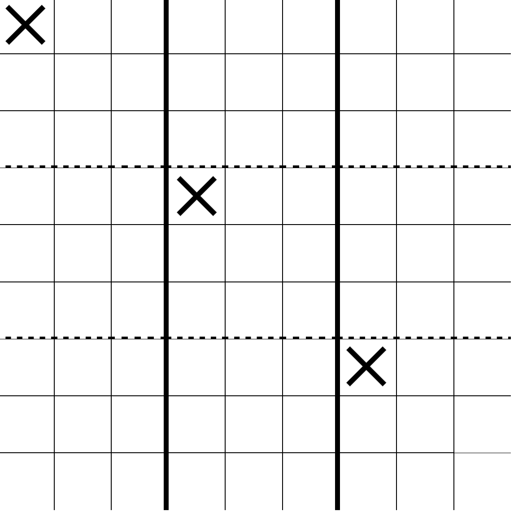
Across the all four dimensions: the x, y, zand w axes:
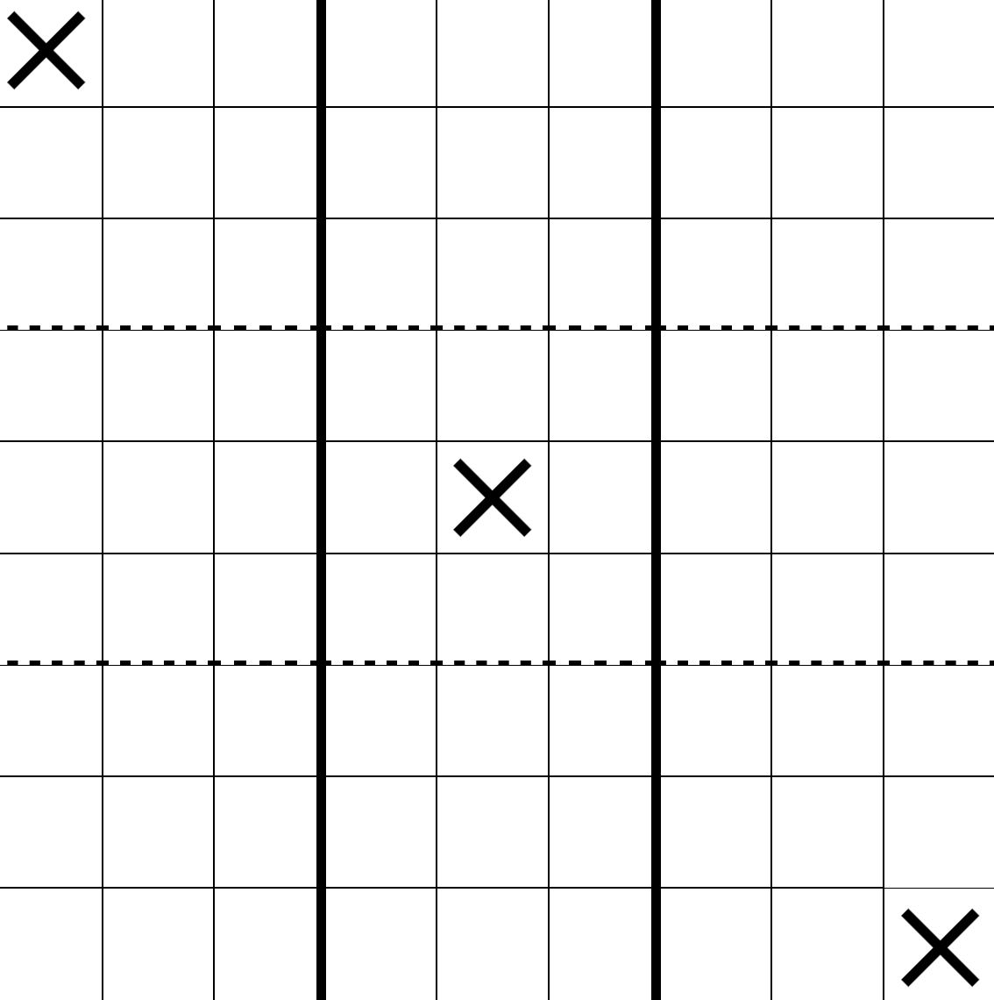
As you can see there are loads of new ways to make a line of three in a row in a 4D board (272 to be exact). This should lead to lots of exciting,
interesting and creative new strategies that weren't available before.
If you are ever having trouble visualising the lines, think in terms of indices:
- In a 2D board, a three in a row could be [0,0] [1,1] [2,2], or [0,0] [0,1] [0,2].
Notice how the criteria for three in a row is that at least
one index is changing by a
magnitude of exactly 1.
- In a 3D board, a three in a row could be [0,0,0] [0,0,1] [0,0,2], [1,2,1] [1,1,1], [1,0,1], or maybe [0,0,2] [1,1,1] [2,2,0]
Notice the pattern? Same as before, for three in a row, at lease one index is changing in steps of magnitude one each time. All three indices could change, but at least one.
For four dimensions it is the exact same, but harder to visualise. Thankfully the maths is just an extension.
I have only played a few games of this 4D tic tac toe so far against my friend Murat,
who beat me every single time despite me having made it. I haven't tested it enough, but I fear that there may be some infallible strategies available in the game that
provide a way to at least guarantee a draw every time, like in regular 2D tic tac toe.
If you find that this is the case, please let me know. I could address this
by instead of ending the game when one player gets three in a row, continue the game until the board is full. The number of 3s in a row for each player would be counted
and whoever has more would win, which I would be able to implement in about a few hours or so. However, I thought this version of the game would be easier to play, which is
why I made it this way. I might just make that second version of it for the craic though.